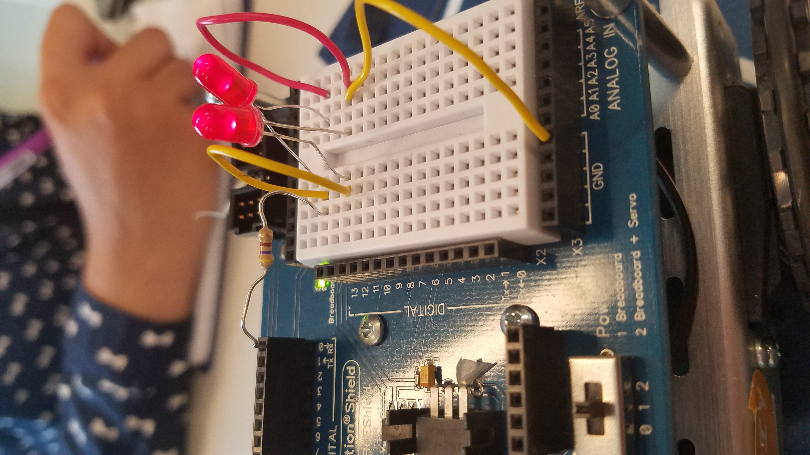

7/18/17
Based on what we learned so far, there are many similarities between Python and Scratch. Some are:
define functions
loops
conditionals/ booleans
variables/ parameters
7/21/17- Reflection on Making a Filter project
About lists: Lists have indexes which represent the place values of each of the indexes in a list. You represent it by []. For example, x= [1,2,3,4] The first index is x[0] which is 1.
In order to complete the project I worked with Rose. We finished pretty quickly and it was pretty great to see our results.
We then went on to try it with different colors.
The difficulties of this Obamicon project was trying to figure out how to format the code. We had the basic idea but because tupuls are immutable,
we had to think of another way.
Each element of core4 was used because we had variables that were used in each function. We used the 'for' loop to get each element in the list of pixels. We also used if then statements which required booleans.
If I could make another filter, I would make a filter similar to snapchat's one.
I really enjoyed it when we were able to make a filter that was almost like the filters on our phone. It took a lot of trial and error and we almost gave up,
but at the last second we managed to make it work and that was a relief.
7/25/17 - Reflection on Our Wire Project
Today we created a circuit!!

It was challenging at first and we doubted ourselves because nothing we tried worked but the problem was that the lightbulb was fused
We also learned about Manuela Veloso. They're two female engineers that both worked on building and improving the abilities of robots.
Manuela Veloso tried to incorporate deep learning into robots and Ayanna Howards tried to make robots think on their own. Reflection on our lightshow
Today along with the basic circuit making we made a lightshow. My team and I had a lot of problems with our robot. Only two out of the 13 pins worked so we were forced to restrict our code to only those two pins.
Our teamwork was pretty good, we all tried to make the code work and firx the circuit.
The other groups that we saw used more for loops than us, but if our uploading and robot worked, our lightshow should've worked.
The basics of every Arduino sketch is an LED light, a restrictor, and jumper wires.
7/27/17 - Reflection on our robot dance show
Yesterday and today we worked on a dance show. Ours worked pretty well. It was simple but it fit the song rhythm.
What I learned that I didn't know before were all the names of the parts of the robot, how to program the robot using Arduino, and almost everything about these robots.
My favorite part of the dance was how well it fit with the rhythm.
The outputs that both Manuela Veloso and Ayanna Howard need for their robots is to perform certain tasks after sensing stuff.
8/1/17 - Reflection on JavaScript and adding it to the webpage
I learned a lot of new stuff about the intenet. They are all just a bunch of files that are linked to each other. It was really interesting to learn about Javascript along with HTML and CSS.
Latex is a language that allows people to format documents and is frequently used to write academic Math and CS texts which makes it a Markup Language.
One thing that I saw on someone else's website that I thought was cool was how Brittany had links to all her social medias with the small logo links.
One JavaScript challenge that I faced today was using the if then statements and making the picture go back to the original picture after you click it.